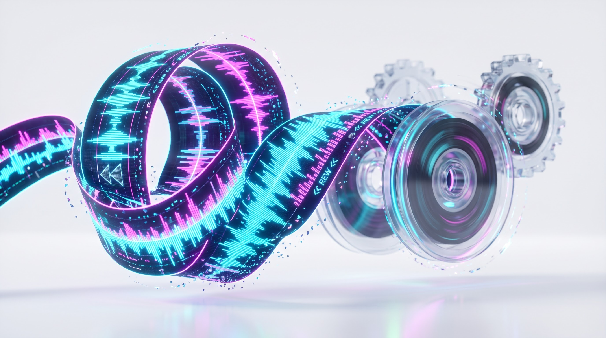
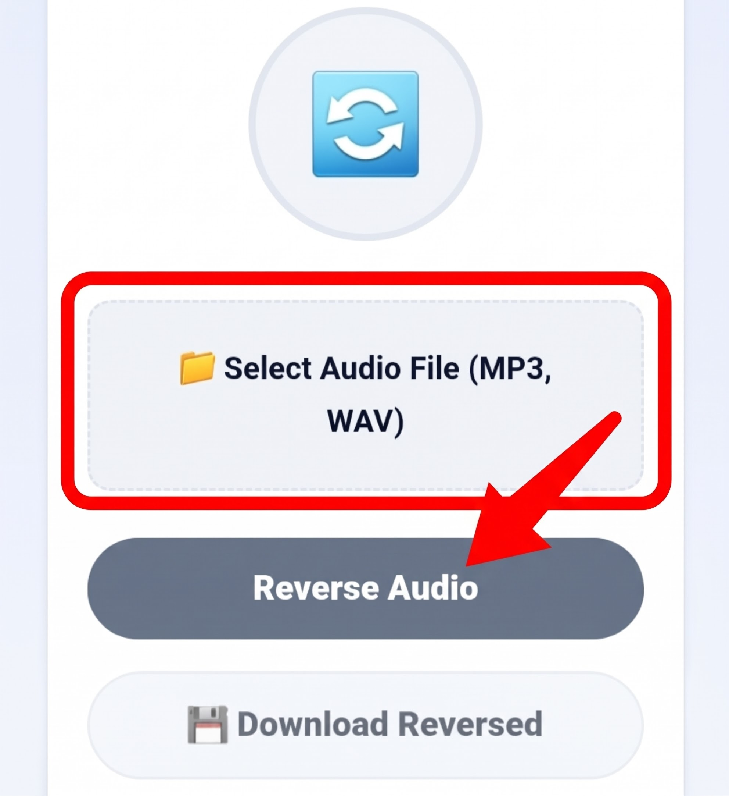

Reverse Audio Tool
Flip MP3, WAV, or AAC recordings backward with millisecond precision. Generate eerie sound effects, backward vocals, and transitional risers right in your browser.
🔄
Flip MP3, WAV, or AAC recordings backward with millisecond precision. Generate eerie sound effects, backward vocals, and transitional risers right in your browser.

Playing sound backwards—historically known as backmasking—has been one of the most transformative creative techniques in audio production since the mid-20th century. During the analog era of the 1960s, recording pioneers like The Beatles and Jimi Hendrix accidentally discovered backward audio by manually threading physical reel-to-reel magnetic tapes across playback heads in reverse. What resulted was an entirely new acoustic dimension: sharp percussive attacks transformed into gentle, swelling fade-ins, while vocal syllables melted into surreal, dreamlike phrases.
In contemporary music genres—from modern trap and hip-hop to cinematic film scoring and ambient electronic music—audio reversal remains an essential sound design pillar. However, while analog producers required razor blades, splicing tape, and dedicated studio consoles, the MiMusic Reverse Audio Tool executes instantaneous, lossless sample inversion right inside your web browser. Utilizing high-performance client-side digital signal processing (DSP), our tool decodes, mirrors, and compiles backward audio streams without requiring heavy digital audio workstation (DAW) software or external plugins.
Digital sound is represented as a dense chronological sequence of numerical measurements known as Pulse Code Modulation (PCM) samples. In standard 44.1 kHz or 48 kHz studio audio, 44,100 to 48,000 discrete amplitude data points are captured every single second for each stereo channel. When you press play under normal conditions, the digital-to-analog converter (DAC) reads this array linearly from index zero to the final sample index.
Our tool deploys the native Web Audio API to ingest your audio file into a raw floating-point AudioBuffer. The algorithmic engine then isolates each independent stereo channel, instantiates a mirrored buffer of identical length and sample rate, and executes a symmetrical pointer loop: the sample residing at index [length - 1 - i] is written to index [i]. Because this calculation occurs in parallel across multi-threaded browser memory, a three-minute song containing over fifteen million individual stereo samples is inverted in less than a single second.
Creating reversed tracks and sound effects takes only a few quick clicks:

Upload your audio file, click Reverse Audio, and download the lossless reversed WAV file.
Reversing audio unlocks endless opportunities for creative exploration:
Unlike conventional online file converters that require uploading your private recordings to obscure cloud servers, MiMusic.net functions exclusively inside your browser sandbox. Your audio data is read into local RAM, decoded, inverted, and packaged into a downloadable WAV blob entirely within your browser thread. No copies are saved, no bandwidth is wasted, and your creative work remains strictly confidential.
Not at all. Our tool inverts raw uncompressed PCM sample points chronologically without applying lossy compression. The resulting reversed file is packaged as an uncompressed 16-bit WAV file, preserving 100% of the original acoustic fidelity.
No. Every step of the decoding, reversal, and file generation pipeline executes locally on your device's hardware via HTML5 and Web Audio APIs. Your files never leave your computer or phone.
WAV is the universally accepted uncompressed audio standard across all video editors (Premiere, Final Cut, CapCut) and music DAWs (FL Studio, Ableton, Logic). It ensures pristine sound quality without the compression artifacts of MP3 re-encoding.
Yes. The tool is fully optimized for mobile touchscreens and works smoothly on mobile browsers such as Chrome, Safari, and Firefox on both Android and iOS devices.